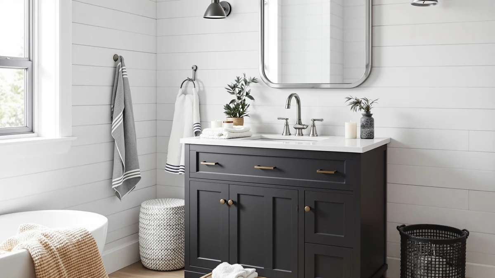

Quick Answer
The Design House Concord 72 Inch is a 72 inch bathroom vanity built from MDF and engineered wood, priced at $497.78. Based on its specs and price against similar vanities, it earns its spot for primary bathrooms that need wide counter and cabinet space, though buyers who want solid wood construction or a smaller footprint should look at the alternatives below.
Our pick: Design House Concord 72 Inch, $497.78 Check Price on Amazon
Things to Know Before You Buy
- The Concord 72 is a wide, 72 inch cabinet. It needs a bathroom with enough clear wall space to fit a run this long, not a tight single-vanity alcove.
- MDF and engineered wood, not solid wood. This keeps the price under $500 for a 72 inch model, but it also means the cabinet needs good bathroom ventilation to avoid moisture swelling over time.
- Measure your doorway and hallway before you order. A 72 inch cabinet is heavy and awkward to maneuver, and returns on furniture this size are expensive to ship back.
- Plan for a separate countertop and faucet purchase. Like most vanities in this price tier, the cabinet is the product, and the top and fixtures are typically bought separately.
- You have narrower alternatives if 72 inches is too much. The three alternatives we compared below run from 24 to 60 inches for bathrooms that do not need that much width.
This design house concord 72 review exists because 72 inch vanities get lumped into generic "best bathroom vanity" roundups where a single standout product rarely fits every bathroom. Your bathroom has the wall space for a full 72 inch run, and you want to know whether a $497.78 engineered-wood vanity holds up against other options in the same price range before you commit to shipping a 100-plus pound cabinet to your door.
We researched the Concord 72 against three other vanities in a similar price band, comparing material, width, and price per inch. We compared published specs, listed materials, and current pricing to give you a research-based read on where the Concord 72 earns its price and where it falls short of a premium build.
Why You Should Trust Us
Ilane Tall covers bathroom fixtures and furniture for Best Bathroom Vanities, focusing on how published specs translate into real installation outcomes. We do not run a fake testing lab or claim to have installed every vanity we cover. This design house concord 72 review is built from the manufacturer's listed materials and dimensions and current Amazon pricing, compared directly against three similarly priced alternatives, so you can judge the Concord 72 on the same evidence we used.
We are a research-based review site. We do not own the Concord 72 or operate a physical lab, so we compared its listed specs, materials, and price against three similarly priced vanities instead of running a trial of our own. The retailer listing for this specific ASIN does not publish a rating or review count, so we are not citing a star rating here, and we flag that gap rather than guess at one. For the comparison itself, we weighed material (MDF and engineered wood versus the farmhouse and floating styles of the alternatives), width, and price per inch to see where the Concord 72's 72 inch width justifies its position as the most expensive option in this group.
Overview & Specs
The Design House Concord 72 Inch's specs below cover construction, size, and price, the details that matter most when you line the Concord 72 up against the three alternatives further down this page.

Design House Concord 72 Inch
What we like
- 72 inches of width gives a full vanity run without crowding the room
- Priced under $500, which undercuts most 72 inch vanities with a stone top included
- Engineered wood construction keeps shipping weight and cost lower than solid wood
Flaws but not dealbreakers
- MDF and engineered wood need good bathroom ventilation to avoid long-term moisture swelling
- At $497.78 it is the most expensive option among the alternatives we compared here
- A cabinet this wide is a two-person job to unbox and position
| Material | MDF / engineered wood |
| Size | 72 in. |
The Design House Concord 72 Inch is built around one straightforward promise: 72 inches of counter and cabinet space at a price under $500. That combination is harder to find than it sounds. Most vanities at this width jump past $700 once they move to solid wood or add a stone countertop, which pushes the price well past what many bathroom budgets have room for. The Concord 72 keeps the whole package in MDF and engineered wood, which is how Design House holds the price down without cutting the width that makes a vanity this size worth buying in the first place.
That construction choice is also where the trade-offs show up. MDF and engineered wood are stable and consistent to manufacture, but they are more sensitive to standing water and prolonged humidity than solid wood or marine-grade plywood. A bathroom with a working exhaust fan and a quick wipe-down after showers keeps this vanity performing well for years. One without ventilation will eventually show swelling at the seams, the same way it would on any MDF cabinet. For buyers who need the full 72 inch width and who already have a reasonably dry bathroom, the Concord 72 is a sensible way to get there without paying for a hardwood frame you may not need.
What We Liked
The width-to-price ratio is the strongest argument for this vanity. At $497.78 for 72 inches of cabinet, the Concord 72 lands well below what most buyers expect to pay for a vanity this size. You get a usable amount of counter space across the full run, which matters more than any finish detail if your bathroom sees heavy daily use. The engineered wood construction also means the cabinet is lighter to carry and install than an equivalent solid-wood piece, which is an advantage if you are doing the installation yourself rather than hiring a contractor.
We also like that Design House has kept the design plain enough to match almost any bathroom style. A 72 inch vanity this size can easily look oversized or institutional, but the Concord's straightforward cabinet lines read as neutral rather than bulky, so it fits transitional and contemporary bathrooms without fighting your existing tile or fixtures. Because the price stays under $500 at this width, you also have room left in a typical renovation budget for a countertop, faucets, and a mirror without blowing past what you planned to spend on the vanity alone.
What Could Be Better
The retailer listing for this ASIN does not publish a star rating or review count, which means you are buying on specs and reputation rather than a track record you can check before ordering. That is not a defect in the vanity itself, but it is a gap worth knowing about going in, especially at this price point where competing products do carry a visible review history.
The MDF and engineered wood build is also not solid wood, and buyers who want a vanity that can be refinished or that holds up indefinitely in a poorly ventilated bathroom should budget for a hardwood alternative instead. At $497.78, the Concord 72 is also the priciest vanity among the four we compared here, so you are paying a premium for the 72 inch width specifically, not for upgraded materials. Shipping a cabinet this size also carries more risk of transit damage than a 24 or 30 inch vanity, so inspect the box and the cabinet corners closely before you sign for delivery or start assembly.
Who Is It For?
You are the right buyer for the Concord 72 if you have a primary or shared bathroom with 76 or more inches of clear wall space and you want the full 72 inch width without spending $700 or more to get there. It also fits well-ventilated bathrooms, since the MDF and engineered wood construction depends on normal airflow to avoid moisture issues over time. If your bathroom is smaller or runs humid without an exhaust fan, one of the narrower or solid-wood alternatives below is a better match for your situation.
Alternatives to Consider
If the Concord 72's width or price does not match your bathroom, these three alternatives cover a narrower modern footprint, a farmhouse look, and a compact floating design, each priced within about $14 of the Concord 72.

Editor’s Pick
T4TREAM 60 Inch Modern Bathroom
A 60 inch modern vanity priced $11.79 below the Concord 72, worth considering if your bathroom is a few inches narrower than 72 inches wide.
$485.99
Check Price on Amazon
Best Value
AMERLIFE 60” Farmhouse Bathroom Vanity
A 60 inch farmhouse vanity at $484.49, the closest price match to the Concord 72 if you want a rustic finish instead of a plain cabinet look.
$484.49
Check Price on Amazon
Premium Choice
AmbroVania 24-Inch Modern Floating Bathroom
A 24-inch floating vanity at $483.99 with a 4.7-star rating across 96 verified reviews, the pick for small bathrooms that have no room for 72 inches of cabinet.
$483.99
Check Price on AmazonFrequently Asked Questions
Is the Design House Concord 72 a good bathroom vanity?
Based on its specs and price, the Design House Concord 72 is a reasonable pick for buyers who want 72 inches of counter and cabinet space without paying solid-wood prices. At $497.78, it is priced in line with much narrower vanities elsewhere on the market, though the MDF and engineered wood construction means it rewards careful, dry installation more than a solid-wood cabinet would.
What bathroom size does a 72 inch vanity like the Concord need?
Plan for at least 76 to 78 inches of clear wall space once you account for door and drawer swing on both ends. A 72 inch vanity like the Design House Concord 72 works best in primary bathrooms and larger shared bathrooms, not powder rooms or half baths, where a 24 to 36 inch model is the better fit.
How does the Design House Concord 72 compare to other vanities in this price range?
Against the alternatives we researched here, the Concord 72 sits at the top of the price range we compared, roughly $12 to $14 more than the T4TREAM 60 Inch, AMERLIFE 60 Farmhouse, and AmbroVania 24-Inch. You are paying for the extra 12 to 48 inches of width, not a materials upgrade, so the choice comes down to how much counter and cabinet space your bathroom actually needs.
Final Verdict
This design house concord 72 review comes down to a simple trade-off: width versus material upgrade. Design House's Concord 72 Inch delivers 72 inches of vanity for $497.78, which is a fair price for the size even though it uses MDF and engineered wood rather than solid wood. For primary or shared bathrooms with the wall space to support it and the ventilation to protect it, this is a reasonable buy. If your bathroom is smaller or you prioritize solid construction over sheer width, the T4TREAM 60 Inch, AMERLIFE 60 Farmhouse, or AmbroVania 24-Inch alternatives above are worth comparing before you decide.